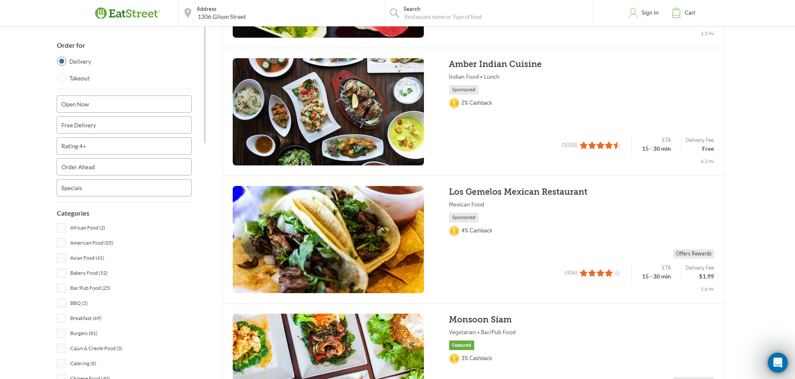
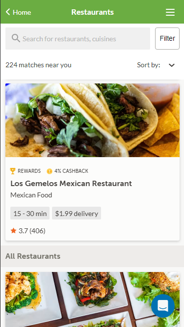
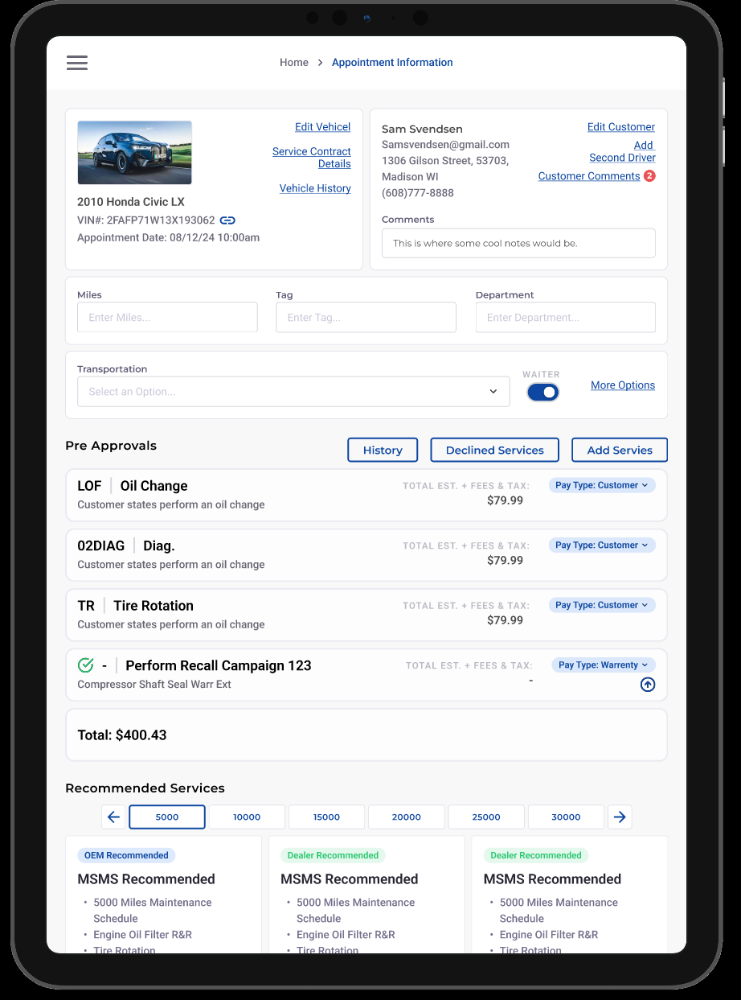
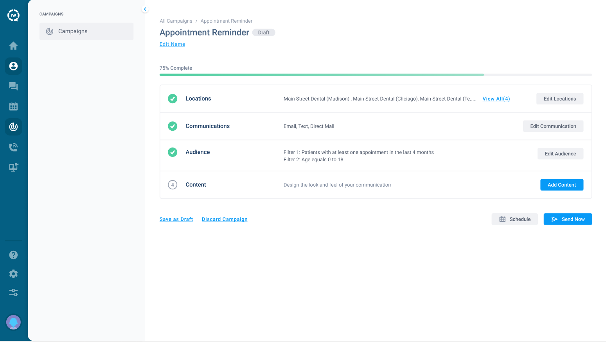
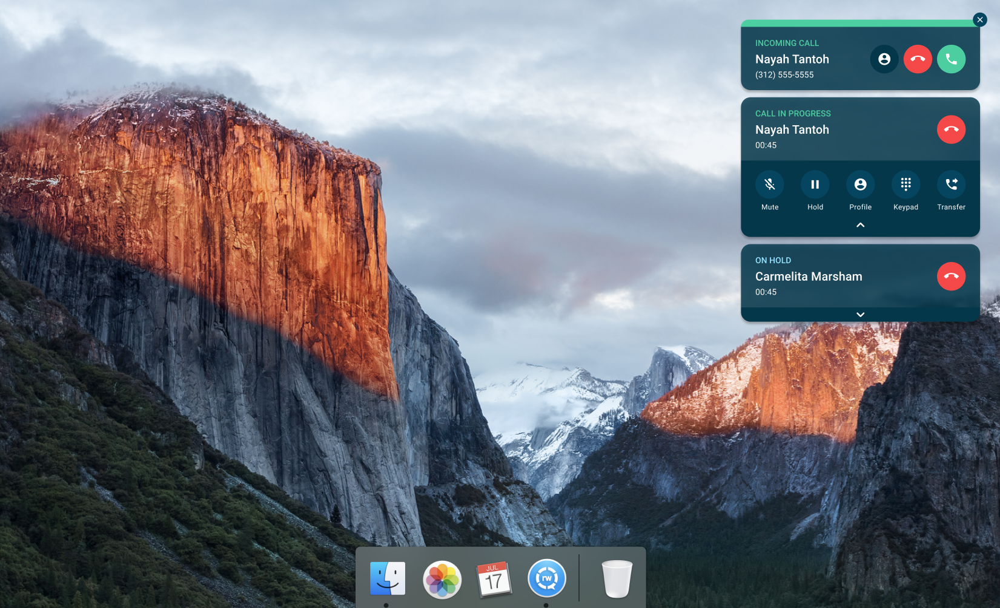

order.app

I audit interfaces across food delivery, healthcare, and automotive, then fix what's actually costing you conversions — fast, through an AI-assisted workflow that passes the time saved straight to your price.
A few things I've built and shaped, across the industries above.





A structured, honest read on your product from someone who's shipped across industries with very different constraints — food delivery's speed pressure, healthcare's compliance weight, automotive's long sales cycles. You get a prioritized list of what's actually hurting conversions, not a report you'll never open.
Design and build run through an AI-assisted pipeline end to end — wireframe to production-ready page — so turnaround lands in days, not months. That speed passes straight through to your price.
Helping teams, from early-stage startups to established companies, figure out where AI actually belongs in their design-to-ship process — and in what order — so adoption becomes a real advantage instead of one more tool nobody uses.
15 minutes to figure out whether you need an audit, a build, or a workflow review — and what "done" looks like.
I go through your product (or start designing from scratch) using AI-assisted tools, backed by 13 years of judgment on what actually matters.
For builds: production-ready pages, reviewed with you before anything ships. For audits: a prioritized, actionable writeup.
You get clean files, clear docs, and a site or set of recommendations you actually understand — no black box.
Send a link to what you're working on and a line about what's not working. I'll tell you honestly whether it's a quick fix or a bigger rebuild.
Email hello@svendesigns.com